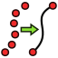
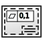

German Translation
Dieser Leitfaden zur Übersetzung ins Deutsche soll bei der Wahl der besten Begriffe in unserer Sprache behilflich sein, wenn diese zu Verwirrung oder Zerstreuung usw. führen können. Ziel ist es, die im Forum diskutierten oder "de facto anwendbaren" Harmonisierungsempfehlungen durch Verallgemeinerung ihrer Praxis zusammenzufassen.
Jede Empfehlung sollte auf dem Forum in deutscher Sprache validiert werden: collaborative documentation (FreeCAD wiki), das der geeignete Ort für den Austausch ist. Die Verbindung zwischen dem Validierungsposten und dieser Seite sollte hergestellt werden (z.B.: Webseiten Übersetzen always translate Workbench by Arbeitsbereich]).
- - -
Was die (vorherige) Einleitung? sagen will und auch anschaulich darstellt, ist, dass wir ein paar Regeln brauchen, auf die sich die Diskussionswilligen im Forum einigen bzw. schon geeinigt haben und eine Übersetzungshilfe für die im Programm verwendeten Begriffe, um auch für Laien verständliche, präzise und fachlich korrekte Übersetzungen erstellen zu können.
Ein paar Regeln
Einleitung
Wer kennt das nicht? Man sucht im deutschen Teil des Wikis nach Hilfe, findet die richtige Seite, liest ein Stückchen, wundert sich über unsinnige Begriffe und Aussagen und liest im englischen Original nach, was die deutsche Übersetzung bedeuten könnte.
Das kann nicht der Sinn einer Übersetzung sein.
Auch der immer wiederkehrende Wechsel zwischen Sie und Du nervt, oder?
Wie die Qualität der Übersetzung verbessert werden soll, wenn man technisch richtige Aussagen mit bestenfalls laienhaften Beschreibungen ersetzt, damit man "näher am englischen Original bleibt", ist einigen im Forum aktiven Anwendern und Übersetzern ein Rätsel. Aus der Diskussion im Forum über die Qualität der Übersetzungen ergibt sich der Wunsch, Regeln für die Übersetzung sowohl der FC-Benutzeroberfläche als auch der Wiki-Seiten aufzustellen.
Beim Verbessern von Beiträgen ist der Verweis auf eine Regel oft verständlicher als Erklärungen wie "complete bullshit" oder "worse than before". Wenn die Regeln durchnummeriert sind kann ein Kommentar deutlich kürzer ausfallen. "Wortzusammensetzungen werden zusammengeschrieben" wird z.B. zu "Regel X angewendet".
Hier werden die Regel gelistet, auf die man sich im Forum geeinigt hat. (Siehe oben)
Regelwerk
Allgemein
R0: Wer sich nicht an die Regeln hält, kann seine Schreibberechtigung im Wiki verlieren.
- Das bezieht sich nicht auf Regelverstöße aus Unachtsamkeit, sondern auf wiederholtes ignorieren der Regeln, auch wenn man entsprechende Hinweise anderer User auf diese Regeln oder Diskussionen im Forum bekommen hat.
R1: Die Übersetzung der Benennungen von Werkzeugen, Elementen der Benutzeroberfläche, der Tool-Tipps (Quick-Infos) usw. für die FreeCAD-Benutzeroberfläche findet in Crowdin statt, nicht im Wiki.
- Für Module, die noch nicht über Crowdin übersetzt werden können, sind die im Wiki eingeführten Begriffe als Platzhalter anzusehen.
- In Crowdin kann demokratisch (aber am Forum vorbei) durch Unterstützung und Ablehnung (up- and down-voting) entschieden werden, welcher der Übersetzungsvorschläge für die Benutzeroberfläche verwendet wird.
R2: Um Diskussionen über Sie oder Du aus dem Weg zu gehen, sollte man das Passiv verwenden oder den Befehlston, für den unsere Sprache berüchtigt ist.
- "Der Abstand X wird festgelegt" statt "Legen Sie den Abstand fest" oder "Lege den Abstand fest".
- "Zum Arbeitsbereich XY wechseln" statt "Wechseln Sie zum Arbeitsbereich XY" oder "Wechsel zum Arbeitsbereich XY".
- You läßt sich meistens problemlos mit man übersetzen.
R3: Die Namen der Arbeitsbereiche werden nicht übersetzt.
- Da sich Im FC-Hauptmenü unabhängig von der verwendeten Ländereinstellung immer die englischen Bezeichnungen der Arbeitsbereiche finden, sollten sie auch in anderen Menüeinträgen nicht übersetzt werden.
- Im Wiki kann eine Übersetzung in Klammern angefügt werden.
- Z.B. sollte Blech (SheetMetal) besser in SheetMetal (Blech) geändert werden.
R4: Zusammengesetzte Begriffe werden zusammengeschrieben oder mit Bindestrich verbunden, wenn es dadurch besser lesbar wird. (Im Zweifelsfall hilft der Duden weiter)
- Fremdwort-Bestandteile (wie die nicht zu übersetzenden Arbeitsbereiche) sollten mit einem Bindestrich verbunden werden, z.B. Sketcher-Arbeitsbereich, PartDesign-Werkzeuge, Draft-Linienzug.
- Wird eine Benennung nachgestellt, wird kein Bindestrich benötigt, z.B. "der Arbeitsbereich Part" statt "der Part-Arbeitsbereich", "das Werkzeug B-Spline" statt "das B-Spline-Werkzeug".
- Auch Abkürzungen sollten mit einem Bindestrich verbunden werden, z.B. CAD-Programm, SVG-Datei.
- Die Getrenntschreibung zusammengesetzter Begriffe im Englischen sollte nicht zum Vorbild genommen werden.
R5: Es ist kein Problem von der wörtlichen Übersetzung abzuweichen, wenn es den Lesefluss verbessert und sich die Aussage des Inhalts nicht ändert.
- So sehr man sich eine automatische 1:1 Übersetzung wünscht, so wenig kann es funktionieren, dasselbe Wort in unterschiedlichen Zusammenhängen mit stets demselben Begriff zu übersetzen. Z.B. ist im Zusammenhang mit Blechbearbeitung Brake nicht mit Bremse zu übersetzen, sondern mit Kantbank und im Bezug auf die Benutzeroberfläche wird aus einem Tool Tip keine Werkzeugspitze, sondern eine Quick-Info (approved translation in Crowdin).
- Eine Gute Umschreibung ist besser als sinnentleertes Wort-für-Wort-Übersetzen.
Wiki
R6: Keine Phantasiewörter erfinden.
- Wenn man eine Beschreibung nicht versteht oder sich mit einem Thema nicht auskennt, sollte man recherchieren, anstatt Phantasiewörter zu erfinden.
- Google, Wikipedia und Leo können oftmals schon weiterhelfen.
- Im Forum gibt es sicherlich auch gut weiterhelfende Antworten, wenn man fragt.
Übersetzungshilfe
Sie enthält:
- Nach Arbeitsbereichen geordnete Übersetzungen der Menüeinträge ggf. mit Änderungsvorschlägen.
- Dies soll u.a. den Abgleich mit den Crowdin-Einträgen erleichtern (Entfall des ständigen Wechselns der FC-Spracheinstellung zwischen DE und EN)
- Erklärungen fachsprachlicher Begriffe, die nicht jedem geläufig sind
So wird ergänzt (Diese Seite lebt vom Mitmachen!):
- Wenn ein Begriff/Ausdruck nicht vorhanden ist, sollte er ergänzt werden. Wenn es keine Einwände gibt, ist nichts weiteres zu tun.
- Sollte es Einwände geben, sollten sie im Forum diskutiert werden, um sich auf ein weiteres Vorgehen (Editieren, Löschen...) zu einigen.
Die zu verwendenden Begriffe werden fett dargestellt, optionale Erweiterungen kursiv.
FreeCAD-Benutzerschnittstelle (Oberfläche)
| Englischer Ausdruck | Funktion | Deutscher Ausdruck | Anmerkung |
|---|---|---|---|
| Interface | Oberfläche, (Benutzer-)Schnittstelle | FreeCADs Hauptfenster | |
| Main view area | Window area | Hauptansichtsbereich | |
| 3D view | Window area | 3D-Ansicht | |
| Combo view | Window area | Combo-Ansicht | |
| Tree view | Window area | Baumansicht | |
| Task panel | Window area | Aufgabenleiste, Aufgabenbereich, Taskleiste, Aufgabenfeld, Arbeitspaneele | Durcheinander bei Crowdin. Favorit: Aufgabenbereich |
| Property editor | Window area | Eigenschafteneditor, Eigenschaften-Editor | |
| Selection view | Window area | Auswahlansicht | |
| Report view | Window area | Ausgabefenster | Oft auch Berichtsansicht... |
| Python console | Window area | Python-Konsole | |
| Shortcut | Window area | Tastenkombination | |
| Status bar | Window area | Statusleiste | |
| Toolbar area | Window area | Symbolleistenbereich, Werkzeugleistenbereich | Toolbar -> Symbolleiste |
| Workbench selector | Window area | Auswahlliste der Arbeitsbereiche | |
| Standard menu | Window area | Standardmenü |
Wiki-Bereich  Std Base
Std Base
- Sammlung der für alle Arbeitsbereiche verfügbaren Funktionen und Werkzeuge
| Englischer Ausdruck | Funktion | Deutscher Ausdruck | Anmerkung |
|---|---|---|---|
| Std Base | Workbench name | Std Basis | Wiki-Seite, übersetzen? |
| File menu | |||
| File | Menue header | Datei | |
| Command | Neu | ||
| Command | Öffnen... | ||
| Open Recent | Command | Zuletzt geöffnete Dateien | Zuletzt verwendete Dateien öffnen? |
| Command | Schließen | ||
| Command | Alles schließen | Alle (Fenster/Dokumente/Dateien) schließen? | |
| Command | Speichern | ||
| Command | Speichern unter | ||
| Command | Speichern einer Kopie... | Eine Kopie speichern? | |
| Command | Alles Speichern | ||
| Command | Änderungen widerrufen | ||
| Command | Importieren... | ||
| Command | Exportieren... | ||
| Command | Dokument zusammenführen | ||
| Command | Dokumentinformation... | ||
| Command | Drucken... | ||
| Command | Druckvorschau... | ||
| Command | PDF exportieren... | ||
| Edit menu | |||
| Edit | Menue header | Bearbeiten | |
| Command | Rückgängig | ||
| Command | Wiederherstellen | ||
| Command | Ausschneiden | ||
| Command | Kopieren | ||
| Command | Einfügen | ||
| Command | Auswahl duplizieren | ||
| Command | Aktualisieren | ||
| Command | Rechteckauswahl | ||
| Command | Box-Element Auswahl | ||
| Command | Alles auswählen | ||
| Command | Löschen | ||
| Command | An Python-Konsole senden | ||
| Command | Positionierung... | ||
| Command | Transformieren | Bewegen? | |
| Command | Ausrichtung... | ||
| Command | Bearbeitungsmodus umschalten | ||
| Command | Eigenschaften | ||
| Command | Bearbeitungsmodus | ||
| View menu | |||
| View | Menue header | Ansicht | |
| Command | Neue Ansicht | ||
| Command | Orthogonale Ansicht | ||
| Command | Perspektivische Ansicht | Perspektivansicht? | |
| Command | Vollbild | ||
| Generic term | Standardansichten | ||
| Command | Einpassen | ||
| Command | Auswahl einpassen | ||
| Command | Auf die Auswahl ausrichten | ||
| Generic term | Axonometrisch | ||
| Command | Isometrisch | ||
| Command | Dimetrisch | ||
| Command | Trimetrisch | ||
| Command | Home | ? | |
| Command | Vorderansicht | ||
| Command | Draufsicht | ||
| Command | Seitenansicht von rechts | ||
| Command | Rückansicht | ||
| Command | Untersicht | ||
| Command | Seitenansicht von links | ||
| Command | Nach links drehen | ||
| Command | Nach rechts drehen | ||
| Store working view | Command | Arbeitsansicht speichern | |
| Recall working view | Command | Arbeitsansicht wiederherstellen | |
| Generic term | Ansicht einfrieren | ||
| Save views... | Command | Ansichten speichern... | |
| Load views... | Command | Ansichten laden... | |
| Freeze view | Command | Ansicht einfrieren | |
| Clear views | Command | Ansichten löschen | |
| Generic term | Darstellungsart | ||
| Command | Original | ? | |
| Command | Punkte | ||
| Command | Drahtgitter | ||
| Command | Versteckte Kanten | Verdeckte Kanten? | |
| Command | Keine Schattierung | ||
| Command | Schattiert | ||
| Command | Flache Linien | ||
| Command | Begrenzungsrahmen | ||
| Generic term | Stereo | Übersetzen? | |
| Command | Stereo rot/cyan | Stereo rot/blaugrün? | |
| Command | Stereo 4-fach Puffer | Stereo Vierfachpuffer? | |
| Command | Horizontales Interlacing | Horizontale Halbbilder? | |
| Command | Vertikales Interlacing | Vertikale Halbbilder? | |
| Command | Stereo aus | ||
| Command | Kameraposition ausgeben | ||
| Generic term | Zoom | Übersetzen? | |
| Command | Vergrößern | ||
| Command | Verkleinern | ||
| Command | Zoomen mit Rechteck | Zoom mit Rechteckauswahl? | |
| Generic term | Dokumentfenster | ||
| Docked | Command | Angedockt | |
| Undocked | Command | Abgedockt | |
| Command | Vollbild | ||
| Command | Achsenkreuz ein-/ausblenden | ||
| Command | Schnittebene | ||
| Command | Dauerhafte Schnittdarstellung | ||
| Command | Texturabbildung... | ||
| Generic term | Sichtbarkeit | ||
| Command | Ein-/ausblenden | ||
| Command | Auswahl einblenden | ||
| Command | Auswahl ausblenden | ||
| Command | Sichtbare Objekte auswählen | ||
| Command | Alle Objekte umschalten | ||
| Command | Alle Objekte einblenden | ||
| Command | Alle Objekte ausblenden | ||
| Command | Selektierbarkeit an/aus | Auswählbarkeit umschalten | |
| Command | Navigations-/Editier-Modus | Navigations-/Bearbeitungsmodus (umschalten)? | |
| Command | Material... | ||
| Command | Darstellung... | ||
| Command | Zufällige Farbe | ||
| ( |
Command | Farbe pro Fläche | (Wenn Arbeitsbereich Part oder PartDesign aktiv ist) |
| Command | Transparenzmodus umschalten | ||
| Generic term | Arbeitsbereich | (Arbeitsbereichsauswahl) | |
| Generic term | Symbolleisten | (Symbolleistenauswahl) | |
| File | Command, toggle | Datei | |
| Edit | Command, toggle | Bearbeiten | |
| Clipboard | Command, toggle | Zwischenablage | |
| Workbench | Command, toggle | Arbeitsbereich | |
| Macro | Command, toggle | Makro | |
| View | Command, toggle | Ansicht | |
| Individual views | Command, toggle | Einzelne Ansichten | |
| Structure | Command, toggle | Struktur | Strukturieren? |
| Help | Command, toggle | HIlfe | |
| Lock toolbars | Command, toggle | Symbolleisten sperren | |
| Generic term | Fenster | ||
| Task view | Command, toggle | Aufgaben | Aufgaben-Fenster |
| Tree view | Command, toggle | Baumansicht | |
| Property view/editor | Command, toggle | Eigenschaften | Eigenschafteneditor |
| Selection view | Command, toggle | Auswahlansicht | |
| Python comsole | Command, toggle | Python-Konsole | |
| Report view | Command, toggle | Ausgabefenster | |
| Combo view | Command, toggle | Combo-Ansicht | |
| Model | Command, toggle | Modell | |
| Generic term | Überlagerungsmodus angedockter Fenster | ||
| Generic term | Verknüpfungsnavigation | ? | |
| Generic term | BaumAnsicht-Aktionen | Übersetzen? | |
| Status bar | Command, toggle | Statusleiste | |
| Tools menu | |||
| Tools | Menue header | Werkzeuge | |
| Command | Parameter bearbeiten | ||
| Command | Bild speichern | ||
| Command | Bild laden... | ||
| Command | Szenengraph untersuchen... | Szenendiagramm? | |
| Command | Abhängigkeitsdiagramm | ||
| Export dependency graph... | Command | Abhängigkeitsdiagramm exportieren... | |
| Command | Dokument-Dienstprogramm... | ||
| Command | Textdokument hinzufügen | ||
| Command | Drehscheibe... | ||
| Command | Einheiten-Umrechner... | ||
| Command | Benutzerdefiniert... | Anpassen? | |
| Command | Addon-Manager | ||
| Command | Messen | ||
| Macro menu | |||
| Macro | Menue header | Makro | |
| Command | Makro aufzeichnen... | ||
| Command | Makroaufzeichnung beenden | ||
| Command | Makros... | ||
| Recent macros | Command | Aktuelle Makros | |
| Command | Makro ausführen | ||
| Attach to remote debugger... | Command | An Remote-Debugger anhängen... | |
| Command | Makro debuggen | ||
| Command | Debuggen stoppen | ||
| Step over | Command | Einen Schritt weiter | |
| Step into | Command | Einzelschritt | |
| Toggle breakpoint | Command | Haltepunkt an/aus | |
| Windows menu | |||
| Windows | Menue header | Fenster | |
| Command | Nächstes Fenster | ||
| Command | Vorheriges Fenster | ||
| Command | Anordnen | ||
| Command | Fenster... | ||
| Help menu | |||
| Help | Menue header | Hilfe | |
| Command | Hilfe | ||
| Additional tools panel | |||
| Structure | Panel header | Struktur | Nur Symbolleiste |
| Command | Baugruppe erstellen | Bauelement? | |
| Generic term | Bezugselemente erstellen | eingeführt in 1.1 | |
| Command | Bezugssytem erstellen | eingeführt in 1.1 | |
| Command | Bezugsebene erstellen | eingeführt in 1.1 | |
| Command | Bezugslinie erstellen | eingeführt in 1.1 | |
| Command | Bezugspunkt erstellen | eingeführt in 1.1 | |
| Command | Gruppe erstellen | ||
| Command | Verknüpfung erstellen | ||
| Generic term | Link actions | Übersetzen? | |
| Command | Unterverknüpfung erstellen | ||
| Command | Durch Verknüpfung ersetzen | ||
| Command | Verknüpfung auflösen | ||
| Command | Verknüpfung importieren | ||
| Command | Alle Verknüpfungen importieren | ||
| Command | Variablensatz erstellen |
Arbeitsbereich  Assembly
Assembly
| Englischer Ausdruck | Funktion | Deutscher Ausdruck | Anmerkung |
|---|---|---|---|
| Workbench name | Assembly | Arbeitsbereich, nicht übersetzen! | |
| Assembly | Menue header | Assembly | Menü-Überschrift (übersetzen?) |
| Command | Neue Baugruppe | ||
| Generic term | Komponente einfügen | ||
| Command | Komponente | ||
| Command | Bauelement einfügen | Std-Part? | |
| Command | Baugruppe berechnen | ||
| Command | Explosionsansicht | ||
| Command | Simulation | ||
| Command | Stückliste | ||
| Command | ASMT-Datei exportieren | Nur menü | |
| Command | Verankern umschalten | Festsetzen? | |
| Command | Starre Verbindung | ||
| Command | Drehgelenk | (Drehverbindung, Scharnier?) | |
| Command | Drehschubgelenk | Zylindrische Verbindung, Drehschubverbindung, zylindrische Führung? | |
| Command | Schubgelenk | Gleitverbindung, Schubverbindung, prismatische Führung? | |
| Command | Kugelgelenk | Kugelverbindung, Punktverbindung? | |
| Command | Abstand | Kontakt, Abstandsverbindung? | |
| Command | Parallele Ausrichtung | Parallele Verbindung, Parallelführung? | |
| Command | Rechtwinklige Ausrichtung | Rechtwinklige Verbindung, Rechtwinklige Führung? | |
| Command | Winkelausrichtung | Winkelverbindung, Winkelführung? | |
| Command | Zahnstangengetriebe | Kopplung, Übersetzung? (Zahnstange-Ritzel-Verbindung) | |
| Command | Schraubgetriebe | Verbindung, Kopplung? (Spindelübersetzung) | |
| Generic term | Stirnrad-/Riemengetriebe | Verbindung, Kopplung? (Zahnrad-/Riemenübersetzung) | |
| Command | Stirnradgetriebe | Verbindung, Kopplung? (Zahnradübersetzung) | |
| Command | Riemengetriebe | Verbindung, Kopplung? (Riemenübersetzung) |
Arbeitsbereich  BIM
BIM
| Englischer Ausdruck | Funktion | Deutscher Ausdruck | Anmerkung |
|---|---|---|---|
| Workbench name | BIM | Arbeitsbereich, nicht übersetzen! | |
| 2D Drafting | Menue header | 2D-Zeichnen | Menü-Überschrift |
| Drafting Tools | Tool bar name | Zeichenwerkzeuge | Name der Symbolleiste |
| Command | Skizze | ||
| Command | Linie | ||
| Command | Linienzug | ||
| Command | Kreis | ||
| Command | Kreisbogen | ||
| Command | Kreisbogen durch 3 Punkte | ||
| Command | Verrundung | ||
| Command | Ellipse | ||
| Command | Vieleck | ||
| Command | Rechteck | ||
| Command | B-Spline | ||
| Command | Bézierkurve | ||
| Command | Kubische Bézierkurve | ||
| Command | Punkt | ||
| 3D/BIM | Menue header | 3D/BIM | Menü-Überschrift |
| 3D/BIM Tools | Tool bar name | 3D/BIM-Werkzeuge | Name der Symbolleiste |
| Command | Projekt | ||
| Command | Grundstück | ||
| Command | Gebäude | ||
| Command | Stockwerk | ||
| Command | Raum | Umbauter Raum, nicht Zimmer | |
| Command | Wand | ||
| Command | Vorhangfassade | ||
| Command | Stütze | ||
| Command | Balken | ||
| Command | Platte | (Boden-, Fundament-, Deckenplatte) | |
| Command | Tür | ||
| Command | Fenster | ||
| Command | Rohr | ||
| Command | Verbinder | ||
| Command | Treppe | ||
| Command | Dach | ||
| Command | Platte | ||
| Command | Rahmen | ||
| Command | Zaun | ||
| Command | Fachwerkbinder | Fachwerkträger? | |
| Command | Ausstattung | ||
| Generic term | Bewehrungswerkzeuge | ||
| Command | Benutzerdefinierte Bewehrung | ||
| Command | Gerade Bewehrung | ||
| Command | U-Förmige Bewehrung | ||
| Command | L-Förmige Bewehrung | ||
| Command | Bewehrungsbügel | Bügelbewehrung? | |
| Command | Abgesetzte Bewehrung | ||
| Command | Wendelbewehrung | ||
| Command | Stützenbewehrung | ||
| Command | Balkenbewehrung | ||
| Command | Plattenbewehrung | ||
| Command | Fundamentbewehrung | ||
| Generic term | Generische 3D-Werkzeuge | ||
| Command | Komponente | ||
| Command | Komponente | ||
| Command | Komponente | ||
| Command | Komponente | ||
| Command | Komponente | ||
| Command | Komponente | ||
| Command | Externe Referenz | ||
| Annotation | Menue header | Beschriftung | Menü-Überschrift |
| Annotation Tools | Tool bar name | Beschriftungswerkzeuge | Name der Symbolleiste |
| Generic term | 2D-Ansichten erstellen | ||
| Snapping | Menue header | Einrasten | Menü-Überschrift |
| Draft Snap | Tool bar name | Draft Einrasten | Name der Symbolleiste |
| Modify | Menue header | Modifizieren | Menü-Überschrift |
| General Tools | Tool bar name | Allgemeine Werkzeuge | Name der Symbolleiste |
| Manage | Menue header | Verwalten | Menü-Überschrift |
| Manage Tools | Tool bar name | Verwaltungswerkzeuge | Name der Symbolleiste |
| Utils | Menue header | Werkzeuge | Menü-Überschrift (keine Symbolleiste) |
| Generic term | Plattenwerkzeuge | ||
| Generic term | Strukturwerkzeuge | Strukturelement-Werkzeuge | |
| Generic term | Schrittweite | Nudge, nudge, wink, wink, grin, grin? | |
| Command | Wand |
Arbeitsbereich  CAM
CAM
| Englischer Ausdruck | Funktion | Deutscher Ausdruck | Anmerkung |
|---|---|---|---|
| Workbench name | CAM | Arbeitsbereich, nicht übersetzen! | |
| CAM | Menue header | CAM | Menü-Überschrift (übersetzen?) |
| Command | Auftrag | ||
| Generic term | Path Dressup | Übersetzen? | |
| Generic term | Supplemental Commands | Übersetzen? | |
| Generic term | Path Modification | Übersetzen? | |
| Generic term | Utils | Übersetzen? | |
| PropertyBag | Command | Eigenschaften Sammlung | Bindestrich? |
Arbeitsbereich  Draft
Draft
| Englischer Ausdruck | Funktion | Deutscher Ausdruck | Anmerkung |
|---|---|---|---|
| Draft | Workbench name | Draft | Arbeitsbereich, nicht übersetzen! |
| Drafting | Menue header | Zeichnen | |
| Command | Linie | ||
| Command | Linienzug | ||
| Command | Verrundung | ||
| Generic term | Bogenwerkzeuge | ||
| Command | Kreisbogen | ||
| Command | Bogen durch 3 Punkte | ||
| Command | Kreis | ||
| Command | Ellipse | ||
| Command | Rechteck | ||
| Command | Linienzug | ||
| Command | B-Spline | ||
| Generic term | Bézierwerkzeuge | ||
| Command | Kubische Bézierkurve | ||
| Command | Bézierkurve | ||
| Command | Punkt | ||
| Command | Flächenverbinder | ||
| Command | Textform | ||
| Command | Schraffur | ||
| Annotation | Menue header | Beschriftung | |
| Command | Text | ||
| Command | Maß | ||
| Command | Hinweis | Unterschiedliche Beschriftungen mit Hinweislinie | |
| Command | Beschriftungstile... | ||
| Modification | Menue header | Änderung | |
| Command | Verschieben | ||
| Generic term | Anordnungswerkzeuge | ||
| Command | Anordnung | ||
| Utilities | Menue header | Dienstprogramme | |
| Command | Stil festlegen |
Arbeitsbereich  FEM
FEM
| Englischer Ausdruck | Funktion | Deutscher Ausdruck | Anmerkung |
|---|---|---|---|
| Workbench name | FEM | Arbeitsbereich, nicht übersetzen! | |
| Model | Menue header | Modell | Modellieren? |
| Command | Analyse-Container | ||
| Generic term | Materialien | Werkstoffe? | |
| Command | Werkstoff für Festkörper | ||
| Command | Werkstoff für Fluide | ||
| Command | Werkstoff für Festkörper | ||
| Command | Bewehrter Werkstoff (Beton) | ||
| Command | Werkstoff-Editor | ||
| Generic term | Element-Geometrie | Übersetzen? | |
| Command | Stabqerschnitt | für (Zug-/Druck-) Stäbe und (Biege-) Träger/Balken | |
| Command | Stabdrehung | ||
| Command | Shell plate thickness | ||
| Command | Fluid section for 1D flow | ||
| Generic term | Electromagnetic constraints | Übersetzen? Elektromagnetische Randbedingungen/Einflussgrößen | |
| Command | Randbedingung elektrostatisches Potential | ||
| Command | Randbedingung Stromdichte | Einflussgröße? | |
| Command | Randbedingung Magnetisierung | ||
| Generic term | Fluid-Randbedingungen | Übersetzen? | |
| Command | Startbedingung Strömungsgeschwindigkeit | ||
| Command | Startbedingung Druck | ||
| Command | Randbedingung Strömungsgeschwindigkeit | ||
| Generic term | Geometrische Randbedingungen | Übersetzen? Geometrische Einflüsse | |
| Command | Constraint plane rotation | ||
| Command | Constraint section print | ||
| Command | Constraint transform | ||
| Generic term | Mechanische Randbedingungen | ||
| Command | Randbedingung Festsetzen | ||
| Command | Randbedingung Versatz | ||
| Command | Randbedingung Flächenkontakt | ||
| Command | Randbedingung Verbinder | ||
| Command | Randbedingung Feder | ||
| Command | Randbedingung Krafteinwirkung | ||
| Command | Randbedingung Druck | ||
| Command | Constraint centrif | ||
| Command | Randbedingung Eigengewicht | ||
| Generic term | Thermische Randbedingungen | ||
| Command | Randbedingung Starttemperatur | Startbedingung Temperatur? | |
| Command | Randbedingung Wärmestrom | ||
| Command | Randbedingung Temperatur | ||
| Command | Constraint body heat source | Randbedingung Körperwärmequelle | |
| Generic term | Konstanten überschreiben | ||
| Command | Elektrische Feldkonstante | ||
| Mesh | Menue header | Netz | Vernetzen? |
| Command | FEM-Netz von Form von Netgen | FEM-Netz erstellen (Netgen)? | |
| Command | FEM-Netz erstellen (Gmsh) | ||
| Command | FEM-Netz-Begrenzungsschicht | ||
| Command | FEM-Netz-Bereich | ||
| Command | FEM-Netz-Gruppe | ||
| Command | Knoten-Set | ||
| Command | FEM-Netz zu Netz | ||
| Solve | Menue header | Lösen | Analysieren? |
| Command | Solver CalculiX Standard | Übersetzen? | |
| Command | Solver Elmer | Übersetzen? | |
| Command | Solver Mystran | Übersetzen? | |
| Command | Solver Z88 | Übersetzen? | |
| Generic term | Mechanische Gleichungen | Übersetzen? | |
| Command | Elasticity equation | Elastizitätsgleichung? | |
| Command | Deformation equation | Verformungsgleichung | |
| Generic term | Elektromagnetische Gleichungen | ||
| Command | Electrostatic equation | Gleichung Elektrostatik | |
| Command | Gleichung für elektrische Kraft | ||
| Command | Magnetodynamic equation | Gleichung Elektrodynamik | |
| Command | Magnetodynamic 2D equation | Gleichung Elektrodynamik 2D | |
| Command | Flow equation | Gleichung Strömung | |
| Command | Flux equation | Gleichung Fluss | |
| Command | Heat equation | Gleichung Wärme? | |
| Command | Solver job control | Lösersteuerung? | |
| Command | Run solver calculations | Löser ausführen | |
| Results | Menue header | Ergebnisse | |
| Command | Purge results | Ergebnisse löschen | |
| Command | Ergebnis anzeigen | ||
| Command | Änderungen auf Pipeline anwenden | ||
| Command | Nachbearbeitungspipeline aus Ergebnis | Nachbereitung? | |
| Command | Verformungsfilter | ||
| Command | Skalar Ausschnitt-Filter | ||
| Command | Funktion Schnitt-Filter | ||
| Command | Region Ausschnitt-Filter | ||
| Command | Konturenfilter | ||
| Command | Linie Ausschnitt-Filter | ||
| Command | Linearisierte Spannungsdarstellung | ||
| Command | Daten zu Punkt Ausschnits-Filter | ||
| Generic term | Filter functions | Übersetzen? | |
| Command | Ebene | ||
| Command | Kugel | ||
| Command | Zylinder | ||
| Command | Quader | ||
| Utilities | Menue header | Dienstprogramme | |
| Command | Schnittebene auf Fläche | ||
| Command | Entferne alle Schnittebenen | Alle Schnittebenen entfernen? | |
| Command | Open FEM examples | Übersetzen? FEM-Beispiele öffnen |
Arbeitsbereich  Image
Image
| Englischer Ausdruck | Funktion | Deutscher Ausdruck | Anmerkung |
|---|---|---|---|
| Workbench name | Image | Arbeitsbereich, nicht übersetzen! | |
| Menue header | Menüspalte nicht vorhanden | ||
| Command | Öffnen... | ||
| Command | Bildebene erstellen... | ||
| Command | Bildebene skalieren |
Arbeitsbereich  Inspection
Inspection
| Englischer Ausdruck | Funktion | Deutscher Ausdruck | Anmerkung |
|---|---|---|---|
| Workbench name | Inspection | Arbeitsbereich, nicht übersetzen! | |
| Inspection | Menue header | Inspection | Menü-Überschrift (übersetzen?) |
| Visual inspection... | Command | Visual inspection... | |
| Command | Inspection |
Arbeitsbereich  Mesh
Mesh
| Englischer Ausdruck | Funktion | Deutscher Ausdruck | Anmerkung |
|---|---|---|---|
| Workbench name | Mesh | Arbeitsbereich, nicht übersetzen! | |
| Meshes | Menue header | Netze | Menü-Überschrift (übersetzen?) |
| Command | Netz importieren... | ||
| Command | Netz exportieren... | ||
| Command | Netz aus Form erstellen... | ||
| Command | Aufbereitung... | ||
| Generic term | Analysieren | ||
| Generic term | Boolesche Operation | "Bool'sche" korrigieren (Crowdin) | |
| Generic term | Cutting | Übersetzen? Auftrennen |
Arbeitsbereich  OpenSCAD
OpenSCAD
| Englischer Ausdruck | Funktion | Deutscher Ausdruck | Anmerkung |
|---|---|---|---|
| Workbench name | OpenSCAD | Arbeitsbereich, nicht übersetzen! | |
| OpenSCAD | Menue header | OpenSCAD | Menü-Überschrift |
| Command | Replace Object | Übersetzen? | |
| Command | Remove Object and their children | Übersetzen? | |
| Command | Refine Shape Feature | Übersetzen? | |
| Command | Mirror Mesh Feature... | Übersetzen? | |
| Command | Scale Mesh Feature... | Übersetzen? | |
| Command | Resize Mesh Feature... | Übersetzen? | |
| Command | Increase Tolerance Feature | Übersetzen? | |
| Command | Convert Edges To Faces | Übersetzen? | |
| Command | Expand Placements | Übersetzen? | |
| Command | Explode Group | Übersetzen? | |
| Command | Nur im Wiki vorhanden | ||
| Command | Nur im Wiki vorhanden | ||
| Command | Nur im Wiki vorhanden | ||
| Command | Nur im Wiki vorhanden | ||
| Command | Nur im Wiki vorhanden |
Arbeitsbereich  Part
Part
| Englischer Ausdruck | Funktion | Deutscher Ausdruck | Anmerkung |
|---|---|---|---|
| Workbench name | Part | Arbeitsbereich, nicht übersetzen! | |
| Part | Menue header | Formteil | Menü-Überschrift (wird übersetzt?) |
| Command | CAD importieren... | ||
| Command | CAD exportieren... | ||
| Command | Rechteckauswahl | ||
| Generic term | Grundkörper | ||
| Command | Würfel | ||
| Command | Zylinder | ||
| Command | Kugel | ||
| Command | Kegel | ||
| Command | Torus | ||
| Command | Rohr erstellen... | (Rohr, Röhre, (Hohl-) Zylinder?) | |
| Command | Grundkörper erstellen... | Werkzeug zum Erstellen von Primitiven | |
| Menue item | Ebene | ||
| Menue item | Quader | ||
| Menue item | Zylinder | ||
| Menue item | Kegel | ||
| Menue item | Kugel | ||
| Menue item | Ellipsoid | ||
| Menue item | Torus | ||
| Menue item | Prisma | ||
| Menue item | Keil | ||
| Menue item | Helix | Wendel? | |
| Menue item | Spirale | ||
| Menue item | Kreis | ||
| Menue item | Ellipse | ||
| Menue item | Punkt | ||
| Menue item | Linie | ||
| Menue item | Regelmäßiges Polygon | Gleichseitiges Vieleck? | |
| Command | Form-Generator... | ||
| Command | Form aus Dreiecksnetz erstellen... | ||
| Command | Create points object from mesh... | Übersetzen (Crowdin) | |
| Command | In Festkörper umwandeln | "Festkörper erzeugen" korrigieren (Crowdin) | |
| Command | Formen umkehren | ||
| Generic term | Create a copy | Übersetzen (Crowdin) | |
| Command | Einfache Kopie erstellen | ||
| Command | Create a transformed copy | Übersetzen (Crowdin) | |
| Command | Create shape element copy | Übersetzen (Crowdin) | |
| Command | Form aufbereiten | ||
| Command | Geometrie überprüfen | ||
| Command | Merkmal entfernen | ||
| Generic term | Boolesche Operationen | Bool'sche korrigieren (Crowdin) | |
| Command | Boolesche Operation... | ||
| Command | Differenz | Wie in Differenzmenge. | |
| Command | Vereinigung | Wie in Vereinigungsmenge. | |
| Command | Schnitt | Wie in Schnittmenge. | |
| Generic term | Verbinden | ||
| Command | Objekte verbinden | Schaltfläche ist nicht übersetzt... | |
| Command | Objekt einbinden | Schaltfläche ist nicht übersetzt... | |
| Command | Ausschnitt für Objekt | Schaltfläche ist nicht übersetzt... | |
| Generic term | Teilen | ||
| Command | Boolesche Fragmente | Menüeintrag ist nicht übersetzt... | |
| Command | Verbundteile extrahieren | Menüeintrag ist nicht übersetzt... | |
| Command | Teilen zu einem Verbund | Menüeintrag ist nicht und Schaltfläche schlecht übersetzt... | |
| Command | Boolesches XOR | Exklusiv(es) ODER,Menüeintrag ist nicht übersetzt... | |
| Generic term | Verbund | ||
| Command | Erzeuge Verbund | (Verbund erzeugen?) | |
| Command | Verbundteile extrahieren | Schaltfläche ist nicht übersetzt... | |
| Command | Verbund Filter | Bindestrich/Zusammenschreibung?, Schaltfläche ist nicht übersetzt... | |
| Command | Extrudieren... | ||
| Command | Drehen... | ||
| Command | Spiegelung... | ||
| Command | Abrunden... | ||
| Command | Abschrägung... | besser: Anfasen bzw. Fase (Crowdin) | |
| Command | Flächen aus Randkurven erstellen | Erstelle Flächen anhand von Kantenzügen ändern (Crowdin) | |
| Command | Regelfläche erzeugen | ||
| Command | Extrudieren... | ||
| Command | Extrudieren... | ||
| Command | Schnittkurve | ||
| Command | Schnitte... | ||
| Command | Extrudieren... | ||
| Command | Extrudieren... | ||
| Command | Dicke... | ||
| Command | Projektion auf Oberfläche erstellen... | ||
| Command | Attachment... | Übersetzen (Crowdin) |
Arbeitsbereich  Part Design
Part Design
| Englischer Ausdruck | Funktion | Deutscher Ausdruck | Anmerkung |
|---|---|---|---|
| Workbench name | Part Design | Arbeitsbereich, nicht übersetzen! | |
| Part Design | Menue header | Part Design | Menü-Überschrift |
| Command | Körper erstellen | ||
| Generic term | Bezugselement erstellen | 1.0 und davor | |
| Command | Bezugspunkt erstellen | 1.0 und davor | |
| Command | Bezugslinie erstellen | 1.0 und davor | |
| Command | Bezugsebene erstellen | 1.0 und davor | |
| Command | Lokales Koordinatensystem erstellen | 1.0 und davor | |
| Command | Formbinder erstellen | ||
| Command | Teilformbinder erstellen | ||
| Command | Klon erstellen | ||
| Generic term | Objekte hinzufügen | ||
| Command | Extrusionsobjekt (passend zum Oberbegriff) oder Extrudieren/aufdicken (passend zu to pad) |
Aufpolsterung sollte korrigiert werden. | |
| Command | Drehteil | ||
| Command | Ausformung | Formübergang, Übergangsform? | |
| Command | Rohr | (herbk: englischer Begriff ist schon unpassend, das ist kein Rohr) | |
| Command | Wendel | ||
| Generic term | Grundkörper hinzufügen | ||
| Command | Quader | ||
| Command | Zylinder | ||
| Command | Kugel | ||
| Command | Kegel | ||
| Command | Ellipsoid | ||
| Command | Torus | ||
| Command | Prisma | ||
| Command | Keil | ||
| Generic term | Objekte abziehen | ||
| Command | Vertiefung | ||
| Command | Bohrung | ||
| Command | Nut | Ringnut? | |
| Command | Ausformung | ||
| Command | Rohr | (herbk: englischer Begriff ist schon unpassend, das ist kein Rohr) | |
| Command | Wendel | ||
| Generic term | Grundkörper abziehen | ||
| Command | Quader | ||
| Command | Zylinder | ||
| Command | Kugel | ||
| Command | Kegel | ||
| Command | Ellipsoid | ||
| Command | Torus | ||
| Command | Prisma | ||
| Command | Keil | ||
| Generic term | Muster anwenden | ||
| Command | Spiegeln | ||
| Command | Lineares Muster | ||
| Command | Polares Muster | ||
| Command | Mehrfach-Transformation erstellen | ||
| Generic term | Modifikationen | ||
| Command | Verrundung | ||
| Command | Fase | ||
| Command | Formschräge | ||
| Command | Dicke | Wandstärke | |
| Command | Boolesche Verknüpfung | ||
| Command | Migrieren | Nur Menü 0.21.0 und davor | |
| Command | Geometrie überprüfen | 1.0 und neuer | |
| Command | Evolventenrad... | Nur Menü | |
| Involute parameter | Task panel header | Evolventenradparameter | |
| Number of teeth | Task panel label | Anzahl der Zähne | |
| Module | Task panel label | Modul | |
| Pressure angle | Task panel label | Eingriffswinkel | |
| High precision | Task panel label | Hohe Präzision | Hohe Genauigkeit? |
| External gear | Task panel label | Außenverzahnung | |
| Command | Kettenrad... | Nur Menü | |
| Sprocket parameter | Task panel header | Kettenradparameter | |
| Number of teeth | Task panel label | Anzahl der Zähne | |
| Sprocket Reference | Task panel label | Kettenradreferenz | |
| Chain Pitch | Task panel label | Kettenteilung | |
| Roller Diameter | Task panel label | Rollendurchmesser | |
| Thickness | Task panel label | Zahnbreite | |
| Command | Entwurfsassistent für Wellen... | Nur Menü | |
| Sketcher Menu | |||
| Sketch | Menue header | Skizze | Menü-Überschrift |
| Command | Skizze erstellen | (PartDesign_NewSketch != Sketcher_NewSketch) | |
| Command | Skizze bearbeiten | ||
| Command | Skizze verlassen | Nur Menü | |
| Command | Skizzenansicht | Nur Menü | |
| Command | Skizze befestigen... | ||
| Command | Skizze neu ausrichten... | Nur Menü | |
| Command | Skizze überprüfen... | Nur Menü | |
| Command | Skizzen zusammenführen... | Nur Menü | |
| Command | Skizze spiegeln... | Nur Menü |
Arbeitsbereich  Points
Points
| Englischer Ausdruck | Funktion | Deutscher Ausdruck | Anmerkung |
|---|---|---|---|
| Points | Workbench name | Points | Arbeitsbereich, nicht übersetzen! |
| Points | Menue header | Punkte | Menü-Überschrift (übersetzen?) |
| Command | Zu Punkten konvertieren | ... wandeln? | |
| Command | Geordnete Punktwolke | ||
| Command | Punkte importieren... | ||
| Command | Punkte exportieren... | ||
| Command | Punktwolke schneiden | ||
| Command | Punktwolken zusammenführen |
Arbeitsbereich  Raytracing
Raytracing
| Englischer Ausdruck | Funktion | Deutscher Ausdruck | Anmerkung |
|---|---|---|---|
| Raytracing | Workbench name | Raytracing | Arbeitsbereich, nicht übersetzen! |
| Raytracing | Menue header | Raytracing | Menü-Überschrift (übersetzen?) |
| Generic term | Utilities | Übersetzen? | |
| Command | Exportieren der Ansicht in POV-Ray... | Ansicht nach POV-Ray exportieren...? | |
| Command | Exportieren Sie die Kamera in POV-Ray... | Kamera nach POV-Ray exportieren...? | |
| Command | Exportieren Sie Teil in POV-Ray... | Teil nach POV-Ray exportieren...? | |
| Generic term | Neues POV-Ray-Project | ||
| Command | ProjectStd | Übersetzen? | |
| Command | RadiosityNormal | Übersetzen? | |
| Command | RadiosityOutdoorHQ | Übersetzen? | |
| Generic term | Neues Luxrender-Project | ||
| Command | LuxClassic | Übersetzen? | |
| Command | LuxClassic | Übersetzen? | |
| Command | Teil einfügen | ||
| Command | Kamera zurücksetzen | ||
| Command | Projekt exportieren... | ||
| Command | Rendern |
Arbeitsbereich  Reverse Engineering
Reverse Engineering
| Englischer Ausdruck | Funktion | Deutscher Ausdruck | Anmerkung |
|---|---|---|---|
| Reverse Engineering | Workbench name | Reverse Engineering | Arbeitsbereich, nicht übersetzen! |
| Reverse Engineering | Menue header | Reverse Engineering | Menü-Überschrift (übersetzen?) |
| Generic term | Surface Reconstruction | Übersetzen? | |
| Poisson... | Command | Poisson... | Nur im Menü |
| Structured point clouds... | Command | Geordnete Punktwolken | Nur im Menü |
| Generic term | Segmentation | Übersetzen? | |
| Refinement... | Command | Aufbereitung... | Nur im Menü |
| Curvature plot | Command | Krümmungsplot | Nur im Menü |
| Curvature info | Command | Krümmungsinformation | Nur im Menü |
| Mesh segmentation... | Command | Netz-Segmentierung... | Aufteilung? Nur im Menü |
| Manual segmentation... | Command | Manuelle Segmentierung... | Aufteilung? |
| From components | Command | Aus Komponenten | Nur im Menü |
| Wire from mesh boundary... | Command | Draht von Netzgrenze | Nur im Menü |
| Generic term | Approximation | Übersetzen? | |
| Plane... | Command | Ebene... | Nur im Menü |
| Cylinder | Command | Zylinder | Nur im Menü |
| Sphere | Command | Kugel | Nur im Menü |
| Polinomial surface | Command | Polynomfläche | Nur im Menü |
| Command | B-Spline-Fläche approximieren... |
Arbeitsbereich  Robot
Robot
| Englischer Ausdruck | Funktion | Deutscher Ausdruck | Anmerkung |
|---|---|---|---|
| Robot | Workbench name | Robot | Arbeitsbereich, nicht übersetzen! |
| Robot | Menue header | Roboter | Menü-Überschrift (übersetzen?) |
| Generic term | Roboter einfügen | ||
| Command | KUKA IR210 | Nur im Menü | |
| Command | KUKA IR125 | Nur im Menü | |
| Command | KUKA IR500 | Nur im Menü | |
| Command | KUKA IR16 | Nur im Menü | |
| Command | Werkzeug hinzufügen | Nur im Menü | |
| Command | Plaziert einen Roboter | (alte Rechtschreibung) Roboter platzieren? Nur Schaltfläche | |
| Command | Erstelle Bewegungsbahn | Bewegungsbahn erstellen? | |
| Command | In Bewegungsbahn einfügen | ||
| Command | In Bewegungsbahn einfügen | ||
| Command | Bewegungsbahn aus Kanten | ||
| Command | Verkleidete Bewegungsbahn... | ??? Nur Schaltfläche | |
| Command | Bewegungsbahnverbund... | ??? Nur Schaltfläche | |
| Command | Setzen Sie die Ausgangsposition | Ausgangsposition festlegen? | |
| Command | Zur Ausgangsposition bewegen | ||
| Set default orientation | Command | Setze Standardrichtung | Standardrichtung festlegen? Nur im Menü |
| Set default values | Command | Festlegen von Standardwerten | Standardwerte festlegen? Nur im Menü |
| Command | Simulieren einer Bewegungsbahn | Bewegungsbahn simulieren? | |
| Generic term | Exportiere Bewegungsbahn | Bewegungsbahn exportieren? | |
| Command | KUKA kompaktes Unterprogramm... | Nur im Menü | |
| Command | KUKA vollständiges Unterprogramm... | Nur im Menü |
Arbeitsbereich  Sketcher
Sketcher
| Englischer Ausdruck | Funktion | Deutscher Ausdruck | Anmerkung |
|---|---|---|---|
| Sketcher | Workbench name | Sketcher | Arbeitsbereich, nicht übersetzen! |
| Sketch | Menue header | Sketch | Menü-Überschrift (übersetzen?) |
| Command | Skizze erstellen | (Sketcher_NewSketch != PartDesign_NewSketch) | |
| Command | Skizze bearbeiten | ||
| Command | Skizze einer Fläche zuordnen... | ||
| Command | Skizze neu ausrichten... | ||
| Command | Skizze überprüfen... | ||
| Command | Skizzen zusammenführen | (Skizzen zusammenlegen/zusamenfassen?) | |
| Command | Skizze spiegeln | ||
| Command | Skizze verlassen | ||
| Command | Skizze anzeigen | ||
| Command | Schnitt anzeigen | Skizzenebene anzeigen? | |
| Command | Vorgang stoppen | ||
| Command | Raster ein-/ausblenden | ||
| Command | Einrasten umschalten | ||
| Command | Rendering-Reihenfolge konfigurieren | ||
| Generic term | Skizzengeometrien | ||
| Command | Punkt erstellen | ||
| Command | Linienzug erstellen | ||
| Command | Linie erstellen | ||
| Command | Kreisbogen um Mittelpunkt erstellen | ||
| Command | Kreisbogen durch 3 Punkte erstellen | ||
| Command | Ellipsenbogen erstellen | ||
| Command | Hyperbelbogen erstellen | ||
| Command | Parabelbogen erstellen | ||
| Command | Kreis um Mittelpunkt erstellen | ||
| Command | Kreis durch 3 Punkten erstellen | ||
| Command | Ellipse um Mittelpunkt erstellen | ||
| Command | Ellipse durch 3 Punkte erstellen | ||
| Command | Rechteck erstellen | ||
| Command | Zentriertes Rechteck erstellen | ||
| Command | Abgerundetes Rechteck erstellen | ||
| Command | Gleichseitiges Dreieck erstellen | ||
| Command | Quadrat erstellen | ||
| Command | Fünfeck erstellen | ||
| Command | Sechseck erstellen | ||
| Command | Siebeneck erstellen | ||
| Command | Achteck erstellen | ||
| Command | Regelmäßiges Vieleck erstellen | ||
| Command | Nut erstellen | Kontur für Nut oder Feder... | |
| Command | B-Spline erstellen | ||
| Command | Geschlossenen B-Spline erstellen | ||
| Command | B-Spline durch Knoten erstellen | ||
| Command | Geschlossenen B-Spline durch Knoten interpolieren | ||
| Command | Hilfsgeometrie umschalten | ||
| Generic term | Sketcher-Randbedingungen | ||
| Command | Koinzident festlegen (kombiniert) | ||
| Command | Koinzident festlegen | ||
| Command | Punkt auf Objekt festlegen | ||
| Command | Horizontal / vertikal festlegen | ||
| Command | Horizontal festlegen | ||
| Command | Vertikal festlegen | ||
| Command | Parallel festlegen | ||
| Command | Rechtwinklig festlegen | ||
| Command | Tangential oder kollinear festlegen | ||
| Command | Gleichheit festlegen | ||
| Command | Symmetrisch festlegen | ||
| Command | Fixieren | ||
| Command | Sperren | ||
| Command | Horizontalen Abstand festlegen | ||
| Command | Vertikalen Abstand festlegen | ||
| Command | Abstand festlegen | ||
| Command | Automatisch Radius oder Durchmesser festlegen | ||
| Command | Radius festlegen | ||
| Command | Durchmesser festlegen | ||
| Command | Winkel festlegen | ||
| Command | Sperren | ||
| Command | Lichtbrechung (nach Snellius-Gesetz) festlegen | ||
| Command | Randbedingung zwischen festlegend und anzeigend umschalten | ||
| Command | Randbedingung aktivieren/deaktivieren | ||
| Generic term | Sketcher-Werkzeuge | ||
| Command | Verrundung erstellen | ||
| Command | Fase erstellen | ||
| Command | Kante zuschneiden | ||
| Command | Kante verlängern | ||
| Command | Kante teilen | ||
| Command | Externe Geometrie erstellen | ||
| Command | Blaupause erstellen | ||
| Command | Ursprung auswählen | ||
| Command | Horizontale Achse auswählen | ||
| Command | Vertikale Achse auswählen | ||
| Command | Linear anordnen | ||
| Command | Bogenförmig anordnen | ||
| Command | Skalieren | ||
| Command | Versatzkontur | ||
| Command | Symmetrie | ||
| Command | Achsenausrichtung entfernen | ||
| Command | Gesamte Geometrie löschen | ||
| Command | Alle Randbedingungen löschen | ||
| Command | Kopieren im Sketcher | ||
| Command | Ausschneiden im Sketcher | ||
| Command | Einfügen im Sketcher | ||
| Generic term | B-Spline-Werkzeuge | ||
| Command | Geometrie in B-Spline konvertieren | ||
| Command | Grad des B-Splines erhöhen | ||
| Command | Grad des B-Splines verringern | ||
| Command | Vielfachheit eines Knotens erhöhen | ||
| Command | Vielfachheit eines Knotens verringern | ||
| Command | Knoten einfügen | ||
| Command | Kurven verbinden | ||
| Generic term | Sketcher visuell | ||
| Command | Unterbestimmte Elemente auswählen | ||
| Command | Zugehörige Randbedingungen auswählen | ||
| Command | Zugehörige Geometrie auswählen | ||
| Command | Überflüssige Randbedingungen auswählen | ||
| Command | Widersprüchliche Randbedingungen auswählen | ||
| Command | Kreishelfer für Bögen ein-/ausblenden | ||
| Command | Interne Geometrie anzeigen/ausblenden | ||
| Command | Virtuellen Bereich wechseln | ||
| Generic term | B-Spline-Informationsebene | ||
| Command | B-Spline-Grad ein-/ausblenden | ||
| Command | B-Spline-Kontrollpolygon ein-/ausblenden | ||
| Command | B-Spline-Krümmungskamm ein-/ausblenden | ||
| Command | Vielfachheit der B-Spline-Knoten ein-/ausblenden | ||
| Command | Gewicht der B-Spline-Kontrollpunkte ein-/ausblenden |
Arbeitsbereich  Spreadsheet
Spreadsheet
| Menü und Schaltflächen | |||
|---|---|---|---|
| Englischer Ausdruck | Funktion | Deutscher Ausdruck | Anmerkung |
| Workbench name | Spreadsheet | Arbeitsbereich, nicht übersetzen! | |
| Spreadsheet | Menue header | Spreadsheet | Menü-Überschrift (übersetzen?) Kalkulationstabelle |
| Command | Erstelle Kalkulationstabelle | Kalkulationstabelle erstellen? | |
| Command | Kalkulationstabelle importieren | ||
| Command | Kalkulationstabelle exportieren | ||
| Command | Zellen verbinden | ||
| Command | Zelle teilen | ||
| Generic term | Alignment | Übersetzen? Ausrichtung | |
| Command | Linksbündig | ||
| Command | Zentrieren | ||
| Command | Rechtsbündig | ||
| Command | Nach oben ausrichten | ||
| Command | Vertikal zentrieren | ||
| Command | Nach unten ausrichten | ||
| Generic term | Styles | Übersetzen? Texteigenschaften | |
| Command | Text in Fettschrift | Fett? | |
| Command | Text in Kursivschrift | Kursiv? | |
| Command | Text unterstrichen | Unterstrichen? | |
| Command | Alias-Namen festlegen | Nur Schaltfläche | |
| Tabellenansicht | |||
| Alias | Command | Alias | Übersetzen? |
| Content | Command | Inhalt | |
| Eigenschaften Fenster | |||
| Cell properties | Window header | Zelleigenschaften | Übersetzen? |
| Color | Menu item | Farbe | |
| Text | Description | Text | |
| Background | Description | Hintergrund | |
| Alignment | Menu item | Ausrichtung | |
| Horizontal | Header | Horizontale | Horizontal? |
| Left | Radio button | Links | |
| Center | Radio button | Mittelpunkt | Mitte? |
| Right | Radio button | Rechts | |
| Vertical | Header | Vertikale | Vertikal? |
| Top | Radio button | Oben | |
| Center | Radio button | Mittelpunkt | Mitte? |
| Bottom | Radio button | Unten | |
| Style | Menu item | Stil | |
| Bold | Check box | Fett | |
| Italic | Check box | Kursiv | |
| Underline | Check box | Unterstrichen | |
| Display unit | Menu item | Zeige Einheit | (Maß-) Einheit anzeigen? |
| Unit string | Description | Einheit | Kurzform der Maßeinheit? |
| Alias | Menu item | Alias | Übersetzen? |
| Alias for this cell | Description | Alias für diese Zelle | |
| Einstellungen | |||
| Spreadsheet | Page name | Kalkulationstabelle | Übersetzen? |
| Import/Export Settings | Generic term | Import/Export-Einstellungen | |
| Delimiter Character | Description | Trennzeichen | |
| Quote Character | Description | Quote Character | Übersetzen? Anführungszeichen |
| Escape Character | Description | Escape-Zeichen |
Arbeitsbereich  Surface
Surface
| Englischer Ausdruck | Funktion | Deutscher Ausdruck | Anmerkung |
|---|---|---|---|
| Workbench name | Surface | Arbeitsbereich, nicht übersetzen! | |
| Surface | Menue header | Surface | Menü-Überschrift (übersetzen?) |
| Command | Füllfläche | ||
| Command | Begrenzungskurven füllen | ||
| Command | Querschnitte | ||
| Command | Fläche erweitern | ||
| Command | Kurve auf Netz | ||
| Command | Übergangskurve |
Arbeitsbereich  TechDraw
TechDraw
| Englischer Ausdruck | Funktion | Deutscher Ausdruck | Anmerkung |
|---|---|---|---|
| Workbench name | TechDraw (Techn. Zeichnen) | Arbeitsbereich, nicht übersetzen! | |
| TechDraw | Menue header | TechDraw | |
| Command | Neues Zeichnungsblatt aus der Standardvorlage erstellen | ||
| Command | Neues Zeichnungsblatt aus einer Vorlage erstellen | ||
| Command | Seite neu zeichnen | ||
| Command | Ansicht einfügen | ||
| Command | Aktive (3D-)Ansicht einfügen | ||
| Command | Ansichtengruppe einfügen | ||
| Command | Schnittansicht einfügen | ||
| Command | Detailansicht einfügen | ||
| Command | Objekt des Draft-Arbeitsbereiches einfügen | ||
| Command | Objekt des Arch-Arbeitsbereiches einfügen | ||
| Command | Tabellenansicht einfügen | ||
| Command | Ausschnittsgruppe einfügen | (Ausschnittgruppe?) | |
| Command | Ansicht zu Ausschnittsgruppe hinzufügen | ||
| Command | Ansicht aus Ausschnittsgruppe entfernen | ||
| Command | Ansicht verschieben | ||
| Command | Ansicht teilen | ||
| Generic term | Bemaßungen | Bemaßung oder Maße | |
| Command | Längenmaß einfügen | ||
| Command | Horizontales Maß einfügen | ||
| Command | Vertikales Maß einfügen | ||
| Command | Radienmaß einfügen | ||
| Command | Durchmessermaß einfügen | ||
| Command | Winkelmaß einfügen | ||
| Command | Winkelmaß über 3 Punkte einfügen | Nicht im Menü... | |
| Command | Maß für die horizontale Ausdehnung einfügen | ||
| Command | Maß für die vertikale Ausdehnung einfügen | ||
| Command | Maß mit 3D-Geometrie verknüpfen | ||
| Command | Leitmaß einfügen - EXPERIMENTELL | Wer findet einen sinnvolleren Begriff? | |
| Generic term | Ergänzungen: Eigenschaften/Änderungen | ||
| Command | Select Line Attributes, Cascade Spacing and Delta Distance | ||
| Command | Linienmerkmale ändern | ||
| Command | Linie verlängern | ||
| Command | Linie kürzen | ||
| Command | Ansicht fixieren/lösen | ||
| Command | Schnittansicht ausrichten | ||
| Command | Horizontale Kettenmaße anordnen | ||
| Command | Vertikale Kettenmaße anordnen | ||
| Command | Schräge Kettenmaße anordnen | ||
| Command | Horizontale Maße anordnen | ||
| Command | Vertikale Maße anordnen | ||
| Command | Schräge Maße anordnen | ||
| Command | Flächeninhalt berechnen | ||
| Command | Formatierung anpassen | ||
| Generic term | Ergänzungen: Mittellinien/Gewinde | ||
| Command | Kreismittellinien hinzufügen | ||
| Command | Lochkreismittellinien hinzufügen | Bolzenkreis...? | |
| Command | Hilfslinien für Innengewinnde in Seitenansicht hinzufügen | ||
| Command | Hilfslinien für Innengewinnde in Achsansicht hinzufügen | ||
| Command | Hilfslinien für Außengewinnde in Seitenansicht hinzufügen | ||
| Command | Hilfslinien für Außengewinnde in Achsansicht hinzufügen | ||
| Command | Hilfsschnittpunkte hinzufügen | ||
| Command | Hilfskreis hinzufügen | ||
| Command | Hilfsbogen hinzufügen | ||
| Command | Hilfskreis über 3 Punkte hinzufügen | ||
| Command | Parallele Hilfslinie hinzufügen | ||
| Command | Senkrechte Hilfslinie hinzufügen | ||
| Generic term | Ergänzungen: Maße | ||
| Command | Horizontale Maßketten erstellen | ||
| Command | Vertikale Maßketten erstellen | ||
| Command | Schräge Maßketten erstellen | ||
| Command | Horizontale Koordinatenmaße erstellen | ||
| Command | Vertikale Koordinatenmaße erstellen | ||
| Command | Schräge Koordinatenmaße erstellen | ||
| Command | Horizontales Maß an Fase erstellen | ||
| Command | Vertikales Maß an Fase erstellen | ||
| Command | Maß für Bogenlänge erstellen | ||
| Command | '⌀'-Symbol einfügen | ||
| Command | '□'-Symbol einfügen | ||
| Command | Präfixsymbol entfernen | ||
| Command | Dezimalstellenanzahl erhöhen | ||
| Command | Dezimalstellenanzahl verringern | ||
| Command | Seite als SVG-Datei exportieren | ||
| Command | Seite als DXF-Datei exportieren | ||
| Command | Fläche mit Muster aus einer Bilddatei schraffieren | ||
| Command | Fläche mit einer geometrischen Schraffur versehen | ||
| Command | SVG-Zeichnungselement einfügen | ||
| Command | Bitmap-Grafik einfügen | ||
| Command | Ansichtsrahmen ein- oder ausschalten | ||
| Generic term | Anmerkungen | ||
| Command | Anmerkung einfügen | Hinweisfeld einfügen? | |
| Command | Rich-Text-Anmerkung einfügen | Rich-Text-Feld einfügen? | |
| Command | Ballon-Anmerkung einfügen | Hinweisfeld einfügen? | |
| Generic term | Linien hinzufügen | ||
| Command | Hinweislinie zur Ansicht hinzufügen | ||
| Command | Mittellinie zu Fläche(n) hinzufügen | ||
| Command | Mittellinie zwischen 2 Linien hinzufügen | ||
| Command | Mittellinie zwischen 2 Punkten hinzufügen | ||
| Command | Hilfslinie durch 2 Punkte hinzufügen | ||
| Generic term | Knoten hinzufügen | ||
| Command | Hilfspunkt hinzufügen | ||
| Command | Kantenmittelpunkte hinzufügen | ||
| Command | Quadrantengrenzpunkte hinzufügen | ||
| Command | Hilfsobjekt entfernen | ||
| Command | Liniendarstellung ändern | ||
| Command | Verdeckte Kanten ein-/ausblenden | ||
| Command | Hinzufügen von Schweißinformationen zur Hinweislinie | Schweißsymbole zur Hinweislinie hinzufügen? | |
| Project shape... | Command | Form projizieren... |
Externe Arbeitsbereiche
 Assembly3
Assembly3
Übersetzung entsprechend den Wiki-Seiten, Crowdin fehlt noch.
| Englischer Ausdruck | Funktion | Deutscher Ausdruck | Anmerkung |
|---|---|---|---|
| Workbench name | Assembly3 | Arbeitsbereich, nicht übersetzen! | |
| Assembly3 | Menue header | Assembly3 | |
| Command | Baugruppe anlegen | ||
| Command | Objekte gruppieren | ||
| Command | Element anlegen | ||
| Generic term | STEP-Dateien importieren | ||
| Command | STEP-Dateien importieren | In einem Dokument zusammenfassen? | |
| Command | Als Mehrfachdokument einfügen | Baugruppen auf separate Dokumente aufteilen? | |
| Command | Beziehungen anwenden | ||
| Command | Schnelle Berechnung | ||
| Command | Teil bewegen | Objekt bewegen? | |
| Command | Axial bewegen | ||
| Command | Schnelles bewegen | ||
| Command | Bewegung verhindern | ||
| Command | Sichtbarkeit umschalten | ||
| Command | Bewegung aufzeichnen | ||
| Command | Automatische Berechnung | ||
| Command | Smarte Berechnung | ||
| Command | Element automatisch fixieren | ||
| Generic term | Element Darstellung | ||
| Command | Element automatisch anzeigen | ||
| Command | Element-Koordinatensystem anzeigen | ||
| Generic term | Arbeitsebene hinzufügen | Workplane - Fehler im Original! | |
| Command | Arbeitsebene hinzufügen | ||
| Command | XZ-Arbeitsebene hinzufügen | ||
| Command | ZY-Arbeitsebene hinzufügen | ||
| Command | Bezugssystem hinzufügen | ||
| Command | Ursprung hinzufügen | ||
| Command | Zur Beziehung gehen | ||
| Command | Verknüpftes Objekt auswählen | siehe auch: STD Go to linked object | |
| Command | Letztes verknüpftes Objekt auswählen | siehe auch: STD Go to deepest linked object | |
| Command | Objekt aufwärts bewegen | ||
| Command | Objekt abwärts bewegen | ||
| Command | Beziehung vervielfältigen |
 Cables
Cables
| Englischer Ausdruck | Funktion | Deutscher Ausdruck | Anmerkung |
|---|---|---|---|
| Workbench name | Cables | Arbeitsbereich, nicht übersetzen! | |
| Cable Wires | Menue header | Leitungsverläufe | Kabel + Drähte, siehe www.electropedia.org - Wie übersetzen? |
| Command | Leitungsverlauf | Zeichenobjekt für den Verlauf der WireFlex-Objekte (Wortschöpfung aus Draht + Flex) | |
| Command | Knoten hinzufügen | ||
| Command | Knoten löschen | ||
| Command | Knoten befestigen | ||
| Command | Knotenbefestigung entfernen | ||
| Command | Verbundverlauf | ||
| Command | Bearbeiten | ||
| Cables | Menue header | Leitungselemente? Kabel! | Abweichend vom Namen des Arbeitsbereichs übersetzen. Eindeutig definierter Begriff. Die Sammlung von other ready-made elements - andere vorgefertigte Elemente, fasst auch Werkzeuge für unterschiedliche Installationsobjekte zusammen, die Befestigungsstellen für Leitungen enthalten, nicht nur die eigentlichen Leitungen. Verwendet derzeit dieselbe Übersetzungseinheit wie Workbench name. |
| Command | Kabelprofil | Das Kabelprofil ist ein Querschnitt von linearen Bauteilen - hier einem Kabel. | |
| Command | Kabel | Siehe Beschreibung des Zwecks des Arbeitsbereichs. modeling electrical installations in architectural design projects | |
| Command | Elektroinstallationsrohr | Oberbegriff für Kabelkanäle, Leerrohre usw. - Siehe IEV 442-02-03 | |
| Command | Installationsdose | Der Begriff Installationsdose ist in Deutschland genormt und im Kontext des Arbeitsbereichs passender als die ansonsten korrekte Bezeichnung Kabelabschlusskasten oder Abschlusskasten. Siehe IEV 461-10-03 | |
| Command | Steckverbinder | Kann Klemme oder Stecker sein. Eher Stecker und Buchse bzw. Kupplung, wenn Leitungen verbunden werden oder (Verbindungs)Klemmen, wenn sie Adern verbinden. Siehe IEV 151-12-19 | |
| Command | Leuchtenauslaß | Im Original kein Fachbegriff, sondern die umschreibende Zusammensetzung von drei Wörtern (Kabel + Licht+ Punkt). Ein Leuchtenauslaß bezeichnet die Stelle, an der das Kabel aus der Decke kommt um bspw. später dort eine Lampe anzuschließen. | |
| Command | Betriebsmittel | ||
| Command | Kabelmaterial | ||
| Cable Dependent Objects | |||
| Command | Anschlusspunkt | Stellt einen elektrischen Verbindungspunkt für Kabel dar, der als abhängiges Objekt nicht direkt erzeugt werden kann. | |
| Command | Linienbefestigung | ||
| Cable Support | Menue header | Leitungsaufnahme | Menü-Überschrift |
| Command | Befestigungspunkt | Nimmt einen oder mehrere Leitungsknoten auf. Siehe unten. | |
| Command | Befestigungslinie | Nimmt einen oder mehrere Leitungsknoten auf. Siehe oben. | |
| Command | Anbringen | ||
| Command | BefestigungDeaktivieren |
 Curves
Curves
| Englischer Ausdruck | Funktion | Deutscher Ausdruck | Anmerkung |
|---|---|---|---|
| Workbench name | Curves | Arbeitsbereich, nicht übersetzen! | |
| Curves | Menue header | Kurven | |
| Command | Parametrische Linie | ||
| Command | Freihand B-Spline | ||
| Mixed curve | Command | Kombi-Kurve | Kombiniert zwei Kurven durch Projizieren und Verschneiden |
| Command | Kurve verlängern | ||
| Command | Kurven verbinden | ||
| Command | Kurve teilen | ||
| Command | Diskretisieren | Punkte entlang einer Kurve anordnen | |
|  Approximate | Command | Approximieren | |
| Command | Interpolieren | ||
| Blend curve | Command | Übergangskurve | |
| Command | Kammdiagramm | ||
| CurveOnSurface | Command | Kurve auf Oberfläche | |
| Surfaces | Menue header | Oberflächen | |
| Command | Zebraerkzeug | ||
| Trim face | Command | Fläche beschneiden | |
| Command | Iso-Kurve | ||
| Command | Skizze auf Oberfläche | ||
| Sweep2Rails | Command | Sweep2Rails | |
| Command | Profil-Trägerfläche | ||
| Command | Pipeshell-Profil | ||
| Command | Pipeshell | ||
| Command | Gordon-Fläche | ||
| Command | Fläche aufteilen | ||
| Command | Druckfeder | ||
| Command | Reflexionslinien | ||
| Command | Mehrfach-Loft | ||
| Command | Übergangsfläche | ||
| Command | Übergangskörper | ||
| Flatten face | Command | Fläche abwickeln | |
| Rotation Sweep | Command | Rotation Sweep | |
| SurfaceAnalysis | Command | Flächenanalyse | Benennug ist im Original falsch |
| Draft Analysis | Command | Schrägungsanalyse | |
| Truncate Extend | Command | Truncate Extend | |
| WaterLine | Command | Wasserlinie | |
| Misc. | Menue header | Verschiedenes | |
| GeomInfo | Command | GeomInfo | Geometrie-Informationen? |
| Command | Teilform extrahieren | ||
| Command | Parametrischer Körper | ||
| Command | SVG einfügen | ||
| Command | Objekte zur Konsole | ||
| Select Adjacent faces | Command | Angrenzende Flächen auswählen | |
| BSpline to Console | Command | B-Spline zur Konsole |
{kind=link}
{kind=link}
{kind=link}
{kind=link}
{kind=link}
{kind=link}
{kind=link}
{kind=link}
{kind=link}
{kind=link}
{kind=link}
{kind=link}
{kind=link}
{kind=link}
{kind=link}
 CurvedShapes
CurvedShapes
Übersetzung entsprechend den Wiki-Seiten, Crowdin fehlt noch.
{kind=link}
{kind=link}
{kind=link}
 Fasteners
Fasteners
| Englischer Ausdruck | Funktion | Deutscher Ausdruck | Anmerkung |
|---|---|---|---|
| Workbench name | Fasteners | Arbeitsbereich, nicht übersetzen! | |
| Fasteners | Menue header | Fasteners | Befestigungselemente? |
| Command | Befestigungselement umdrehen | ||
| Command | Befetigungselement versetzen | ||
| Command | Form vereinfachen | ||
| Command | An Kernloch anpassen | ||
| Command | An Durchgangsloch anpassen | ||
| Command | Stückliste erstellen | ||
| Command | Screw calculator | Schraubenrechner | |
| Command | Ändert die Parameter von Befestigungselementen | Parameter von Befestigungselementen ändern? Auch Dialogbenennung | |
| Generic term | Hinzufügen Sonstige Kopfformen | Ohne Verb? (2 kombinierte Crowdin-Einträge) | |
| Command | Hinzufügen ASME B18.2.1.1 UNC-Vierkantschrauben | Ohne Verb? (2 kombinierte Crowdin-Einträge) | |
| Command | Hinzufügen ASME B18.5 UNC-Flachrundschrauben mit Vierkantansatz | Ohne Verb? (2 kombinierte Crowdin-Einträge) | |
| Command | Hinzufügen DIN 478 Vierkantschrauben mit Bund | Ohne Verb? (2 kombinierte Crowdin-Einträge) | |
| Command | Hinzufügen DIN 603 Flachrundschrauben mit Vierkantansatz | Ohne Verb? (2 kombinierte Crowdin-Einträge) | |
| Command | Hinzufügen ISO 2342 Gewindestifte mit Schlitz mit Schaft | Ohne Verb? (2 kombinierte Crowdin-Einträge) Schaftschrauben mit Kegelkuppe, mit Schlitz | |
| Generic term | Hinzufügen Außensechskant | Ohne Verb? (2 kombinierte Crowdin-Einträge) Schrauben mit ...? | |
| Command | Hinzufügen ASME B18.2.1.6 UNC-Sechskantschraube. | Ohne Verb? (2 kombinierte Crowdin-Einträge) | |
| Command | Hinzufügen ASME B18.2.1.6 UNC-Sechskantschraube mit Flansch. | Ohne Verb? (2 kombinierte Crowdin-Einträge) | |
| Generic term | Hinzufügen Innensechskant | Ohne Verb? (2 kombinierte Crowdin-Einträge) Schrauben mit ...? | |
| Command | Hinzufügen ASME B18.3.1A UNC-Zylinderschrauben mit Innensechskant. | Ohne Verb? (2 kombinierte Crowdin-Einträge) | |
| Command | Hinzufügen ASME B18.3.1G UNC-Zylinderschrauben mit Innensechskant und niedrigem Kopf. | Ohne Verb? (2 kombinierte Crowdin-Einträge) | |
| Generic term | Hinzufügen Innensechsrund | Ohne Verb? (2 kombinierte Crowdin-Einträge) Schrauben mit ...? | |
| Generic term | Hinzufügen Schlitz | Ohne Verb? (2 kombinierte Crowdin-Einträge) Schrauben mit ...? | |
| Generic term | Hinzufügen Kreuzschlitz | Ohne Verb? (2 kombinierte Crowdin-Einträge) Schrauben mit ...? | |
| Generic term | Hinzufügen Gewindestifte | Ohne Verb? (2 kombinierte Crowdin-Einträge) | |
| Generic term | Hinzufügen Rändelschrauben | Ohne Verb? (2 kombinierte Crowdin-Einträge) | |
| Generic term | Hinzufügen Ground screws | Ohne Verb? (2 kombinierte Crowdin-Einträge) | |
| Generic term | Hinzufügen Muttern | Ohne Verb? (2 kombinierte Crowdin-Einträge) | |
| Generic term | Hinzufügen T-Nutensteine | Ohne Verb? (2 kombinierte Crowdin-Einträge) | |
| Generic term | Hinzufügen Scheibe | Ohne Verb? (2 kombinierte Crowdin-Einträge) Scheiben? | |
| Generic term | Hinzufügen Gewindestange | Ohne Verb? (2 kombinierte Crowdin-Einträge) Gewindestangen? | |
| Generic term | Hinzufügen Einsätze | Ohne Verb? (2 kombinierte Crowdin-Einträge) | |
| Generic term | Hinzufügen Sprengring | Ohne Verb? (2 kombinierte Crowdin-Einträge) Sicherungsringe | |
| Generic term | Hinzufügen Nägel | Ohne Verb? (2 kombinierte Crowdin-Einträge) | |
| Generic term | Hinzufügen Stifte | Ohne Verb? (2 kombinierte Crowdin-Einträge) |
 Gear
Gear
| Englischer Ausdruck | Funktion | Deutscher Ausdruck | Anmerkung |
|---|---|---|---|
| Workbench name | Gear | Arbeitsbereich, nicht übersetzen! | |
| Gear | Menue header | Gear | Menü-Überschrift (übersetzen?) |
| Command | Evolventenzahnrad | ||
| Command | Innenverzahntes Evolventenzahnrad | ||
| Command | Evolventenzahnstange | ||
| Command | Zykloidenzahnrad | ||
| Command | Zykloidenzahnstange | ||
| Command | Kegelrad | ||
| Command | Kronenrad | ||
| Command | Schneckenwelle | ||
| Command | ZahnriemenscheibeT | ||
| Command | Zahnriemenscheibe | ||
| Command | Triebstockrad | ||
| Command | Hypozykloidenrad | ||
| Command | Zahnradpaarung |
 SheetMetal
SheetMetal
Übersetzung entsprechend den Wiki-Seiten, Crowdin fehlt noch.
| Englischer Ausdruck | Funktion | Deutscher Ausdruck | Anmerkung |
|---|---|---|---|
| Workbench name | Sheet Metal | Arbeitsbereich, nicht übersetzen! | |
| Sheet Metal | Menue header | Sheet Metal | |
| Command | Basisobjekt erstellen | ||
| Command | Kante ansetzen | ||
| Command | Fläche erweitern | ||
| Command | Abkanten | ||
| Command | Abwickeln | ||
| Command | Abwickeln ohne Eingaben | ||
| Command | Abwicklung aktualisieren | ||
| Command | Eckentlastung hinzufügen | ||
| Command | Entlastungsausschnitt hinzufügen | ||
| Command | Stoß hinzufügen | ||
| Command | Bogen einfügen | ||
(Sketch On Sheet metal) |
Command | Wickelausschnitt (Skizze auf Blech) |
gibt es einen besseren Begriff? |
| Command | Extrudierter Ausschnitt | gibt es einen besseren Begriff? | |
| Command | Prägen | ||
| Command | Grundform hinzufügen |
 Templater
Templater
| Englischer Ausdruck | Funktion | Deutscher Ausdruck | Anmerkung |
|---|---|---|---|
| Workbench name | Templater | Arbeitsbereich, nicht übersetzen! | |
| Templater | Menue header | Templater | |
| Command | Hilfsansicht | ||
|  Tolerance Frame | Command | Toleranzrahmen | |
| Command | Neue Vorlage Multi | ||
| Command | Neue Vorlage Wiki |
{kind=link}
 Render
Render
| Englischer Ausdruck | Funktion | Deutscher Ausdruck | Anmerkung |
|---|---|---|---|
| Workbench name | Render | Arbeitsbereich, nicht übersetzen! | |
| Render | Menue header | Render | |
| Generic term | Projekte | Projektvorlagen? | |
| Command | Appleseed-Projekt | (2 kombinierte Crowdin-Einträge) | |
| File:Blender.svg Cycles Project | Command | Cycles-Projekt | (2 kombinierte Crowdin-Einträge) |
| Command | Luxcore-Projekt | (2 kombinierte Crowdin-Einträge) | |
| Command | Ospray-Projekt | (2 kombinierte Crowdin-Einträge) | |
| Command | Pbrt-Projekt | (2 kombinierte Crowdin-Einträge) | |
| Command | Povray-Projekt | (2 kombinierte Crowdin-Einträge) | |
| Command | Kamera | ||
| Generic term | Lichter | Lichtquellen | |
| Command | Punktförmige Lichtquelle | Punktlicht? (radiale Strahlen) | |
| Command | Leuchtfläche | Flächenlicht? | |
| Command | Sonnenlicht | (Lichtquelle mit parallelen Strahlen) | |
| Command | ? | (Leuchtreklame) | |
| Command | Rendering-Ansicht | ||
| Generic term | Material | ||
| Command | Material anlegen | Material erstellen? | |
| Command | |||
| Command | |||
| Command | Rendern |
{kind=link}
Fachsprachliche Begriffe
aus dem Englischen
| Englischer Ausdruck | Wortart | Deutscher Ausdruck | Anmerkung |
|---|---|---|---|
| Brake | Noun | Kantbank, (Abkantpresse) | Gerät zum Abkanten von Blechen |
| Constraint | Noun | Bedingung, Beschränkung, Zwang, Auflage, Einschränkung, Nebenbedingung, (technische) Begrenzung, Restriktion, Hemmung, Nötigung, Randbedingung, Zwangsbedingung, Verformungsbehinderung | Wie die Einträge des Online-Wörterbuches zeigen, behindert man sich und die Verständlichkeit von Übersetzungen, wenn man nur Beschränkung als einzig mögliche Übersetzung ansieht. |
| Constrain | Verb | Fesseln, belegen, zwingen, beschränken, behindern, einschränken, hemmen | Siehe Constraint. |
| Construction Geometry | Noun | Hilfsgeometrie | Achtung! False Friend. 'Construction geometry' ist keine 'Konstruktionsgeometrie'! |
| Construction line | Noun | Hilfslinie | Achtung! False Friend. 'Construction lines' sind keine 'Konstruktionslinien'! |
| Dimension | Noun | Maß | Abstand zweier paralleler Flächen bzw. zweier punkte |
| Draft | Noun | Entwurf | In diesem Sinne auch der Name des Arbeitsbereiches Draft, der nicht übersetzt wird |
| Draft | Noun | Entformschräge, Einzug | Ein PartDesign Formelement oder Bestandteil mehrerer anderer Formelemente |
| Draft | Noun | Tiefgang | Wird in diesem Sinne im externen Arbeitsbereich Ship verwendet |
| Feature | Noun | Eigenschaft, Funktion, Merkmal, Besonderheit, Charakteristikum, Einrichtung, Kennzeichen, Zusatz, äußere Erscheinung, Befund, Abstraktion, Konstruktionsmerkmal, Eigentümlichkeit, Auffälligkeit | Stark vom Zusammenhang abhängig |
| Feature | Noun | Formelement | Gestaltverändernder Bestandteil von Festkörpern |
| Flange | Noun | Flansch | Montagerand (Rohr-, Schweiß-, Bördelflansch) |
| Flange | Noun | Bördel, stehender Falz, Umbug, Kante | Oberbegriff für rechtwinklig abgestellte Blechränder |
| Groove and tongue | Noun | Nut und Feder | Hier für die Holzverbindung (Paneele für Vertäfelung) |
| Hem | Noun | Falz | Oberbegriff für (auch mehrfach) umgeschlagene Blechränder |
| Polylinie | Noun | Linienzug (Zeichnungen und Skizzen, meist 2D) | Eine Abfolge unterschiedlicher Linien, die an ihren Endpunkten verbunden sind; offen oder geschlossen, aber ohne T-Verbindung oder Kreuzung. |
| Removed section | Noun | ? | Wie eingedrehter Schnitt, aber außerhalb des Objektumrisses, entlang der Schnittlinie verschoben. Removed im Sinne von relocated |
| Revolved section | Noun | Eingedrehter Schnitt | Schnitt innerhalb des Objektumrisses (Symmetrielinie = Schnittlinie) |
| Scale | Noun | Maßstab | Darstellungsverhältnis meist gezeichneter Geometrie zum Tatsächlichen Objekt |
| Script | Noun | Skript | Schriftliche Ausarbeitung, hier im Sinne eines in einer Makro-Sprache verfassten, eher kurzen Programms |
| Script | Verb | Programmieren, Skript erstellen, skripten | Skripten ist als Übersetzung fragwürdig, eignet sich aber gut um zwischen dem Programmieren umfangreicher Programme und dem Erstellen kleinerer Programme (Skripte, Macros) zu unterscheiden. |
| Shape | Noun | Form, Gestalt, Umriss | Oberbegriff für alle 3D-Objekte (Compound, Compsolid, Solid, Shell, Face, Wire, Edge, Vertex) in FreeCAD. |
| Slot and key | Noun | Nut und Feder | Hier für Welle-Nabe-Verbindungen. (Eine Passfeder in einer gefrästen Passfedernut der Welle und einer durchlaufenden geräumten Nut in der Nabe) |
| Straight flange | Noun | Kante | Rechtwinklig und entlang einer Geraden abgestellter Blechrand |
| Topological naming problem | Noun | Problem der topologischen Benennung | Das häufig benutzte "topologisches Benennungsproblem" ist nicht richtig, da es sich nicht um ein Benennungsproblem handelt, das topologisch ist, sondern um eine topologische Benennung, die Probleme bereitet. |
| Vertex | Noun | Knoten, Eckpunkt | In Fließtext auch: Knotenpunkt oder Ecke (an der sich zwei oder mehr Kanten bzw. Linien treffen) |
| Vertex | Noun | Scheitelpunkt | Im Zusammenhang mit Kurven ein lokales Maximum oder Minimum (Kurvendiskussion) |
| Wire | Noun | Kantenzug (Formränder, oft 3D) | Eine Abfolge unterschiedlicher Kanten, die an ihren Endpunkten verbunden sind; offen oder geschlossen, aber ohne T-Verbindung oder Kreuzung. |
aus dem Deutschen
| Ausdruck | Beschreibung |
|---|---|
Zeichnung | |
| Abmessung | Objekte/Werkstücke haben Abmessungen wie z.B. Länge, Breite, Höhe und Wandstärke. In einer Zeichnung werden sie als Maße eingetragen. |
| Bemaßen | Das Eintragen der Maße auf einer Zeichnung. Früher mit dem Ziel ein Werkstück im Zusammenhang mit einer ausreichenden Anzahl von Ansichten vollständig zu beschreiben; heute als Ergänzung zum verbindlichen 3D-Datensatz. |
| Bemaßung | Die Gesamtheit aller Einträge zur (vollständigen) maßlichen Beschreibung eines Werkstücks. Kein Synonym für Maß! |
| Hilfslinie | Die blauen Linien im Sketcher. Achtung False Friend! Im Englischen heißen die 'construction lines' wohingegen 'Konstruktionslinien' im Deutschen eindeutig die weißen Linien im Sketcher sind. Nämlich solche, die 'zur Konstruktion beitragen'. |
| Maß (Maßeintrag) | Abstand zwischen 2 Punkten oder 2 parallelen Ebenen (3D) bzw. Strecken (2D). Die zeichnerische Darstellung besteht aus Maßzahl, Maßlinie, Maßhilfslinien und ggf. ergänzenden Angaben, wie z.B. Maßeinheit, Toleranz oder Rahmen zur Kennzeichnung spezieller Maße. |
| Maßstab | (Größen-) Verhältnis des in einer Ansicht abgebildeten Werkstückes zu dessen tatsächlicher Größe. Auf der Zeichnung in der Regel als Division ganzer Zahlen angegeben, z.B. 5:1 (Vergrößerung), 1:2 (Verkleinerung). (Siehe auch Skalierung) |
| Pause, Blaupause | Veraltet für Zeichnungskopie |
| Profil, Profilkurve | Querschnittskurve, Grunglage für die Austragung von Flächen und Profilen (Objekte mit konstantem Querschnitt) |
| Skalieren | Größenänderung eines Objektes (Vergrößerung oder Verkleinerung) |
| Skalierung | Verhältnis der Größe eines Objektes vor und nach dem Skalieren. Meist als ein Vielfaches der Ausgangsgröße oder in Prozent angegeben, z.B. 2x, 200% (Vergrößerung), 0,5x, 50% (Verkleinerung). (Siehe auch Maßstab) |
Werkstatt | |
| Bördel, stehender Falz | Meist rechtwinklig abgestellter (umgebogener) Rand gewölbter Bleche bzw. entlang geschwungener Konturen |
| Falz | Umgeschlagener (um ca. 180° gebogener) Blechrand. Für steifere Blechränder, als Verletzungsschutz oder zum Verbinden zweier Werkstücke. |
| Flansch | Montagerand an Rohrenden (Rohrflansch) oder Blechen (Schweiß-, Bördelflansch) |
| Fluchten | In derselben Ausrichtung (kollinear, komplanar) verlaufend |
| Kantbank, (Abkantpresse) | Gerät zum Abkanten (d.h. zum biegen um eine gerade Werkzeugkante mit konstantem Biegeradius) von Blechen. |
| Kante | Meist rechtwinklig abgestellter (umgebogener) Rand an geraden Blechrändern |
| Profil | Halbzeug (Rohmaterial) mit konstantem Querschnitt über seine gesamte Länge |
Computer | |
| Programmieren, skripten | Erstellung von Computerprogrammen. Das "neudeutsche" skripten scheint sich für die Erstellung kleinerer Programme (Skripte, Makros) durchzusetzen, während programmieren für das Erstellen von umfangreichen Programmen und als Oberbegriff verwendet wird |
| SpaceMouse | 3D-Maus zur Navigation im Raum der Firma 3DConnexion. Als Produktname nicht zu übersetzen und mit der Schreibweise SpaceMouse zu benutzen. |